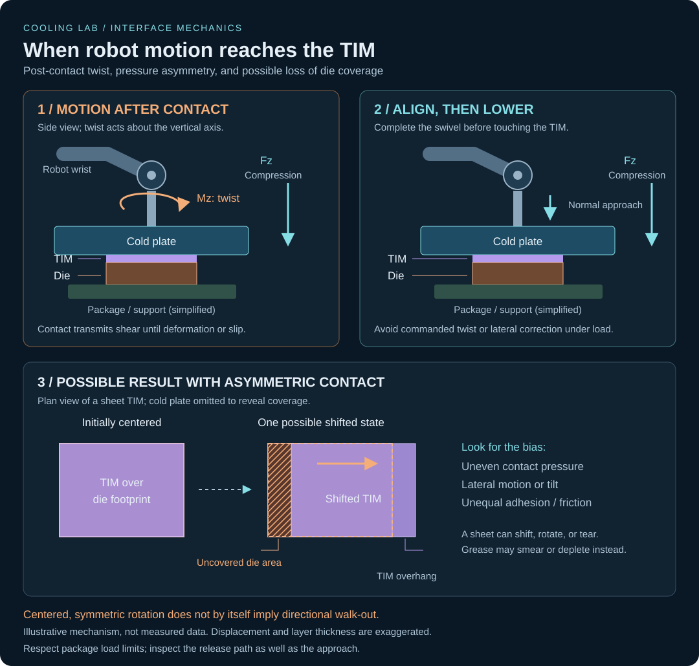

Robotic cold-plate engagement and TIM “walk-out”
By Anagh Dave · Illustrative engineering case study
Illustrative scenario, not a report of measured test results: a robotic arm swivels a cold plate into position and presses it onto a die/TIM stack. If rotation or lateral motion continues after first contact, the interface sees shear as well as compression. A plausible failure mode is assembly-induced TIM migration, informally described here as “walk-out.”
For background on the material families and their failure modes, see the thermal interface materials guide.

What motion reaches the interface?
- Twist about the surface normal: relative plate rotation imposes tangential surface motion that grows with distance from the rotation axis. Friction or adhesion can transmit that motion into the TIM until it deforms or slips.
- Tilt or an off-center normal load: a bending moment creates uneven pressure. One edge can touch first and drag or locally squeeze the material as the plate seats.
- Repeated engagement: asymmetric loading, unequal adhesion at the two surfaces, or a biased approach/release path may produce incremental migration across cycles.
δ ≈ rθ (small rotation; θ in radians)
For example, at 10 mm from the axis, a 1° rotation produces approximately 0.175 mm of tangential surface travel. This is a geometric estimate of plate motion, not a prediction of TIM migration distance; the material response depends on friction, adhesion, compliance, thickness, and load.
The material changes the outcome
- Graphene/graphite sheet: the sheet may slip or rotate as a whole, wrinkle, tear, or lose die coverage. Fragments or shifted edges can introduce electrical risk.
- Compliant pad: shear deformation, edge extrusion, and permanent displacement may change contact area and thickness.
- Grease or softened phase-change TIM: material may smear or redistribute, leaving locally depleted regions rather than moving as an intact sheet.
Reduce shear in the engagement sequence
Complete the positioning swivel before contact, approach along the interface normal, and avoid commanded lateral or rotational correction while loaded. Review the release path too: swiveling away while the surfaces remain in contact can undo a clean engagement.
Consider alignment features or controlled fixture compliance that establish parallel contact without scrubbing the TIM. Any retention feature belongs outside the active interface unless its thermal and electrical effects are explicitly qualified. Do not assume that adding adhesive or increasing clamp force solves the problem: greater load can increase frictional shear, squeeze-out, or package stress. Respect the die, package, and board limits.
A controlled comparison to test the hypothesis
- Compare motion profiles. Start with straight-down engagement versus swivel-under-contact at matched normal load, interface temperature, dwell time, and initial TIM placement. Control approach speed and document any remaining differences.
- Record contact loads and motion. Capture normal force, lateral forces, twisting/bending moments, and robot position around first contact and release where instrumentation permits. Distinguish measured motion from commanded motion.
- Track the material. Measure translation, rotation, coverage, and damage over repeated cycles. Use visible edges or a validated inspection method without placing markers in the thermal contact area. Disassembly can move the TIM and confound the observation.
- Correlate with thermal behavior. Compare interface resistance under matched power and cooling conditions, including measurement uncertainty and replicate assemblies. Define acceptable migration and coverage from the actual die geometry, electrical clearances, and thermal budget rather than an arbitrary universal limit.
A reduction in migration when post-contact motion is removed would support the shear-displacement hypothesis, but inspection and load data are still needed to distinguish slip, material deformation, and squeeze-out.